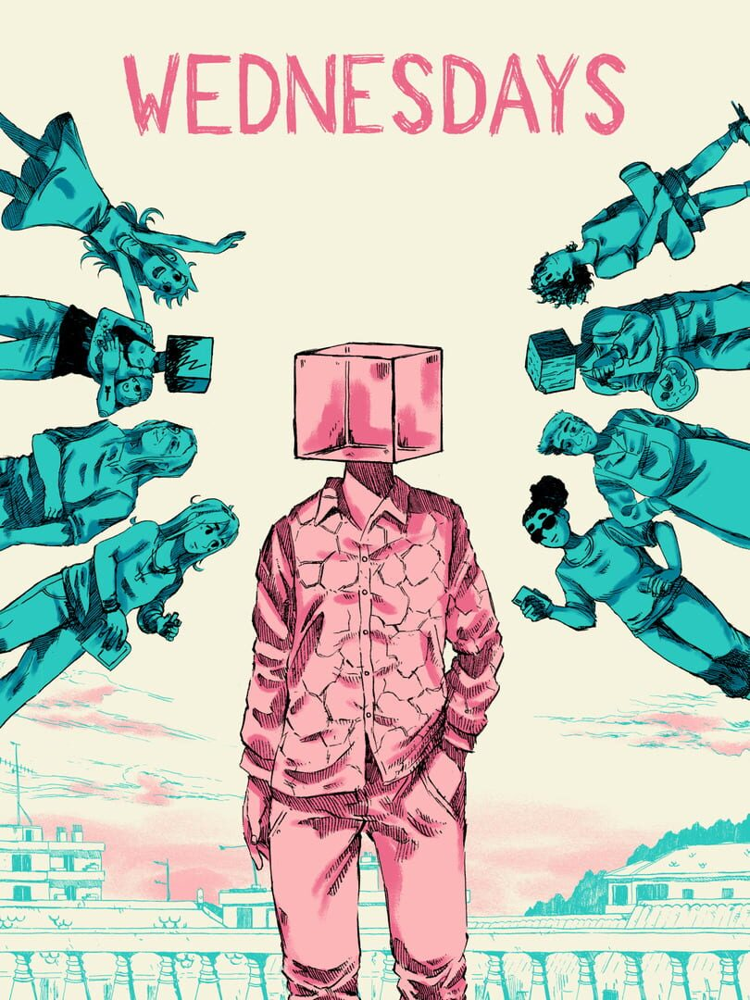

Wednesdays
Wednesdays
Details
|  | |
| Playtime | Not Played |
| Last Activity | Never |
| Added | 2025-11-27 12:22:53 |
| Modified | 2025-12-19 11:05:13 |
| Completion Status | Not Played |
| Library | Steam |
| Source | Steam |
| Platform | PC (Windows) |
| Release Date | 2025-03-26 |
| Community Score | |
| Critic Score | |
| User Score | |
| Genre | Indie Point-and-click Visual Novel |
| Developer | The Pixel Hunt |
| Publisher | ARTE France |
| Feature | Single Player |
| Links | Steam Itch Official Website YouTube Bluesky |
| Tag | 2D Casual Choices Matter Choose Your Own Adventure Colorful Comic Book Conversation Emotional Hand-drawn Indie Interactive Fiction Narration Nonlinear Pixel Graphics Psychological Singleplayer Story Rich Stylized Text based Visual Novel |
Description
Like so many children, Tim was a victim of sexual abuse.
Twenty years later, while playing Orco Park, a videogame from his childhood, his memories will come rushing back along with a flood of questions : How could this have happened? Who knew? How has it shaped him? What does “normal” even mean?
Written by Pierre Corbinais (Haven, Road 96: Prologue, Bury Me, My Love), Wednesdays seeks to raise awareness about child sexual abuse through a surprisingly uplifting story.
A mosaic of stories and characters

Wednesdays tells a fragmented story through multiple perspectives.
Build rides and embellishments in Orco Park to unlock Tim’s memories in the order you see fit.
Step into the shoes of Tim’s relatives and try to piece together the tangled memories of his past.
Unveil a moving and sincere story dealing with intrafamilial sexual abuse without any taboo but with a lot of heart.
Two colorful art styles for the price of one

Wednesdays blends two distinct yet complementary art styles. Tim’s memories come to life through the work of comic artist Exaheva (Mekka Nikki, Still Heroes) and draw inspiration from alternative comics and graphic novels. Orco Park is designed by pixel artist Nico Nowak (There Is No Game: Wrong Dimension), evoking the charm of 90s classic video games.
A game everyone can play
Part video game, part graphic novel, Wednesdays has been designed to be accessible to players of all kinds, and even non-players!
A wide range of settings ensure that the experience can be tailored to suit anyone’s needs.
Authentic voices

Wednesdays doesn’t just aim to break the silence around child sexual abuse, it also provides a platform for several of its team members to have they voices heard, as artists, and as victims.
The game does not include any graphic representation of sexual abuse, and even if its topic might sound grim, Wednesdays is above all about trust, hope and healing.
Accessibility
Accessibility has been taken into account throughout the production of Wednesdays:
- Mouse, keyboard and joystick (joystick or D-pad) support;
- Adjustable text size (5 levels);
- Highly legible alternative font (Luciole);
- Manual or automatic text scrolling, with adjustable speed and preview;
- No precision or speed gameplay nor complex sequences.
More details on the accessibility of Wednesdays are available on ARTE's website.